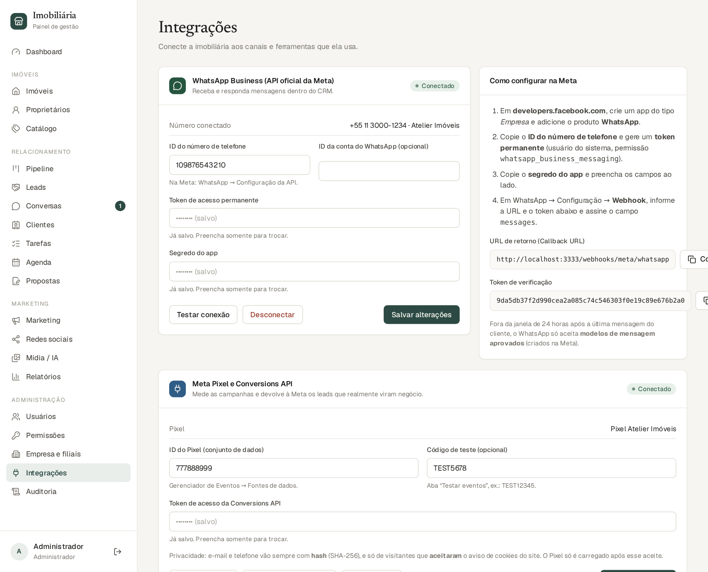
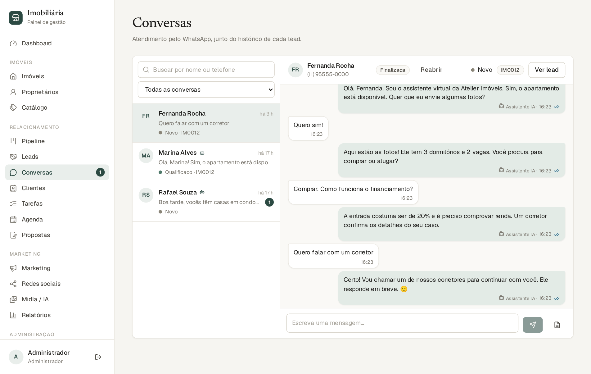
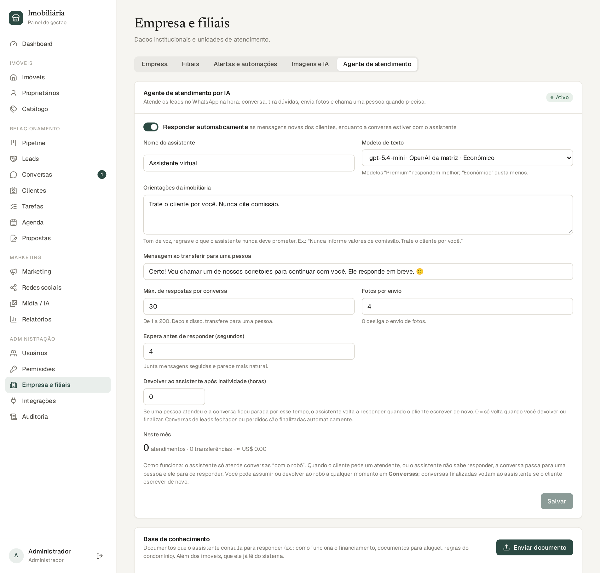
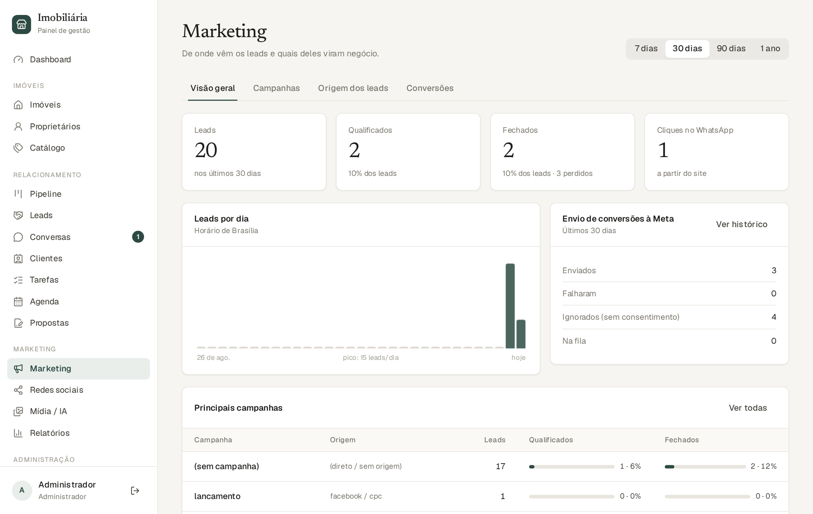
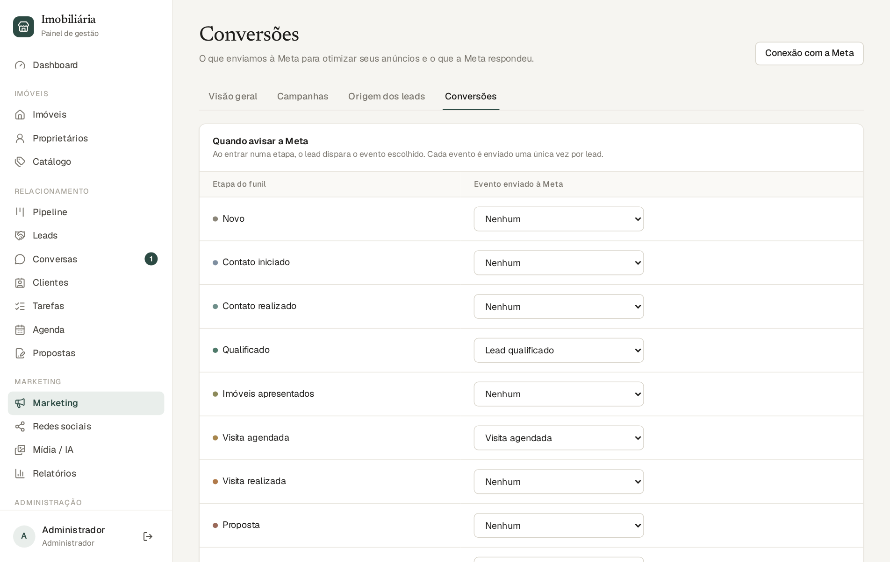
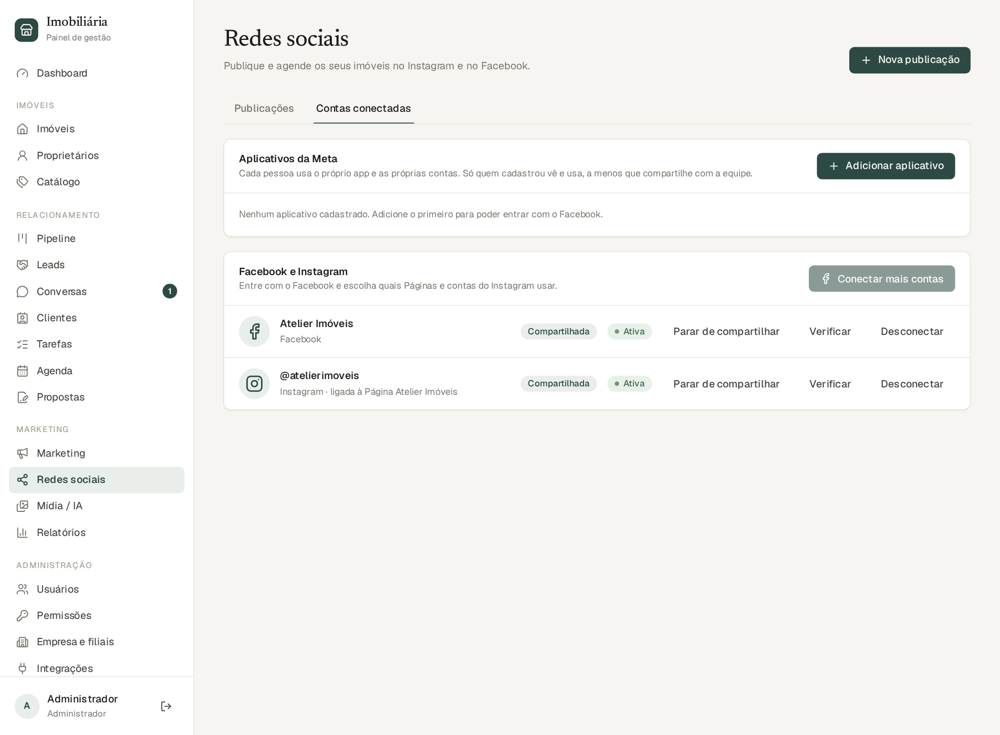
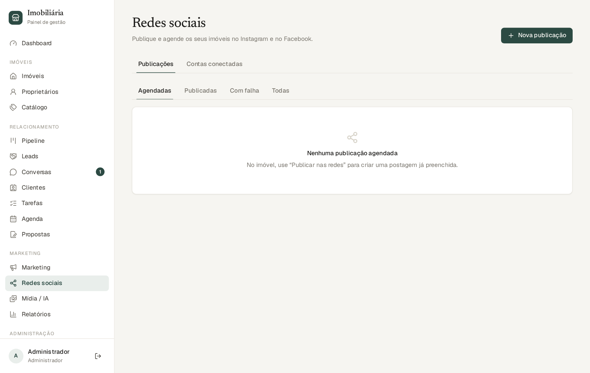
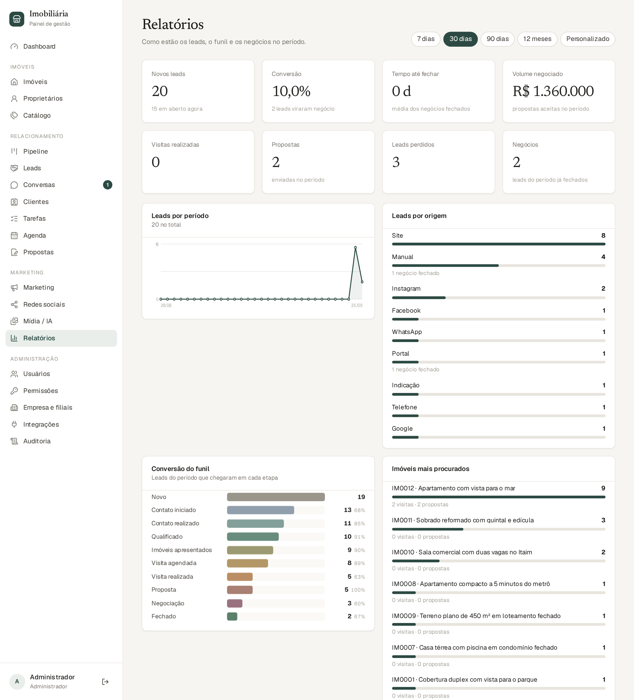
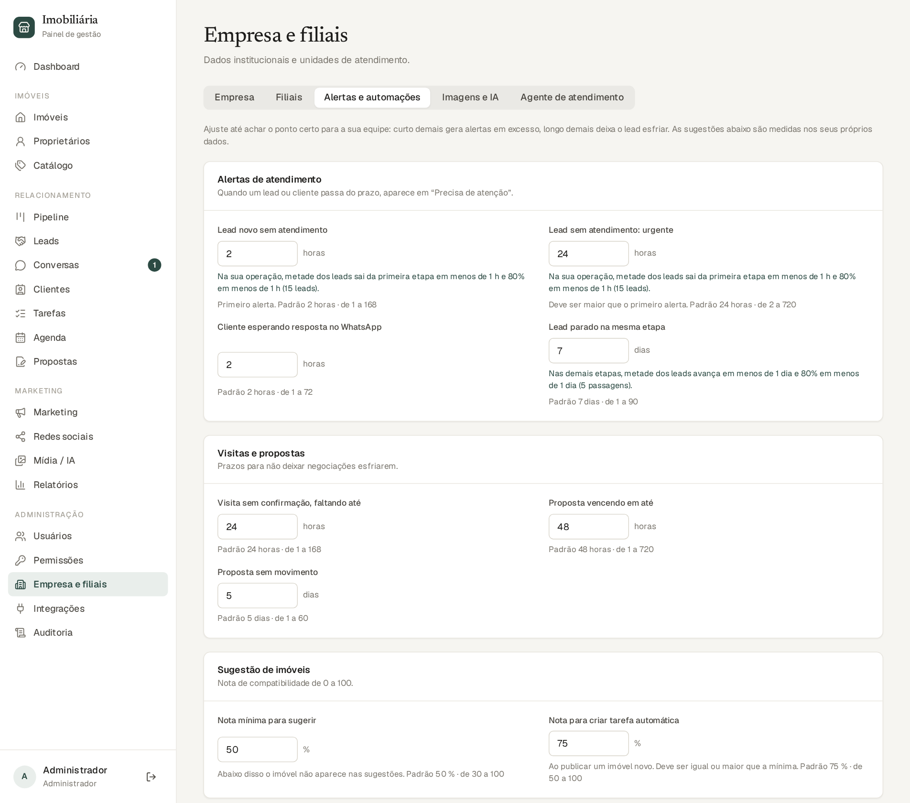

O sistema usa a API oficial do WhatsApp Business (Meta). Na prática, os clientes escrevem para o número da imobiliária e a equipe responde dentro do sistema, com o histórico ligado ao lead. Todas as mensagens ficam registradas.
Etapa técnica, feita uma única vez. Se preferir, peça apoio de quem cuida do seu Facebook/Meta Business. Caminho: Integrações → WhatsApp.

developers.facebook.com), crie um app do tipo Empresa e adicione o produto WhatsApp. Anote o ID do número de telefone, e gere um token de acesso permanente. Em Configurações do app → Básico, copie o segredo do app.
Por regra do WhatsApp, você só pode enviar mensagens livres até 24 horas depois da última mensagem do cliente. Passado esse prazo, só é possível enviar um modelo aprovado pela Meta (clique no ícone de documento ao lado do avião; informe o nome do modelo, o idioma e as variáveis separadas por vírgula). Quando o cliente responder, a janela abre de novo.
Se o agente de IA estiver ligado (capítulo 10), cada conversa tem um responsável pelo atendimento, indicado por uma etiqueta no topo: Assistente IA ou Atendimento humano. Os botões ao lado permitem mudar:
| Botão | O que faz |
|---|---|
| Assumir | Você assume. O assistente para de responder nessa conversa. (Se você simplesmente responder pelo painel, ele também para: você assume automaticamente.) |
| Devolver ao robô | O assistente volta a responder na próxima mensagem do cliente (ele não puxa assunto sozinho). |
| Finalizar | Encerra a conversa. Se o cliente escrever de novo, ela reabre e o assistente atende. |
| Reabrir | Reabre uma conversa finalizada. |
O agente é um assistente virtual que responde os clientes no WhatsApp na hora, mesmo de madrugada ou quando a equipe está ocupada. Ele se apresenta como assistente virtual, conversa sobre o imóvel, envia fotos, tira dúvidas iniciais e passa a conversa para uma pessoa quando necessário. O objetivo não é substituir o corretor, e sim não deixar nenhum lead esperando.
O agente precisa de: (1) o WhatsApp conectado (capítulo 9), (2) uma conta de IA com um modelo de texto (seção 5.4) e (3) a configuração em Empresa e filiais → Agente de atendimento.

Além dos imóveis do sistema, o agente consulta uma base de conhecimento: documentos que você envia, em Base de conhecimento → Enviar documento. Aceita PDF, DOCX, TXT, MD e CSV com texto (até 10 MB). Bons documentos:
O sistema lê o texto, divide em trechos e, a cada pergunta do cliente, busca os trechos mais relevantes (a busca funciona mesmo sem acentos). Cada documento pode ser renomeado, desativado (o agente deixa de usá-lo) ou removido.
No cartão Testar o assistente, converse como se fosse o cliente. Você pode escolher um imóvel de contexto. Nada é enviado por WhatsApp nem gravado em leads. A resposta mostra: o texto, se transferiria para uma pessoa, as ações que faria (enviar fotos, atualizar o lead, pedir visita), os trechos de documentos consultados e o custo aproximado. Salve a configuração antes de testar.
O assistente transfere quando:
Ao transferir: (1) o cliente recebe a mensagem de transferência; (2) a conversa passa a Atendimento humano e o assistente não interage mais; (3) o corretor recebe uma tarefa urgente (“Atender agora no WhatsApp: …”) e a linha do tempo do lead registra a transferência.
| Situação | O que acontece |
|---|---|
| Você clica em Devolver ao robô | Ele volta na próxima mensagem do cliente. |
| Você clica em Finalizar a conversa | Se o cliente escrever de novo, a conversa reabre e o robô atende. |
| Você fecha o lead como Fechado ou Perdido | A conversa é finalizada automaticamente. O cliente que voltar entra como lead novo e o robô atende. |
| Conversa com uma pessoa parada por muito tempo | Se você configurou Devolver ao assistente após inatividade (horas), o robô volta sozinho quando o cliente escrever. Com 0, nunca volta sem você. |
| Uma pessoa responde pelo painel | Ela assume: o robô sai daquela conversa. |
O menu Marketing mostra quais canais e campanhas trazem leads que realmente avançam no funil, para você investir onde dá resultado. Tem quatro abas: Geral, Campanhas, Origens e Conversões, e um seletor de período (7, 30, 90 dias…).

Nos anúncios, use links com parâmetros de campanha (UTM), por exemplo:
https://seusite.com.br/imoveis?utm_source=instagram&utm_medium=cpc&utm_campaign=lancamento-outubro&utm_content=video1
Quando o visitante preenche o formulário ou clica no WhatsApp, o sistema guarda fonte, meio, campanha, anúncio e, quando o clique veio de um anúncio da Meta, os identificadores do clique. Tudo aparece na ficha do lead, bloco Origem.
Essa integração (administrador ou marketing) devolve à Meta os resultados reais: quais leads foram qualificados, agendaram visita e compraram. Assim os anúncios aprendem a trazer gente melhor.

Quais eventos são enviados e em qual etapa do funil é configurável em Marketing → Conversões (por padrão: Qualificado → lead qualificado; Visita agendada → agendamento; Fechado → compra, com o valor negociado). Cada evento é enviado uma única vez por lead.
Você publica ou agenda posts dos imóveis direto do sistema, com o imóvel publicado no site ou não. O caminho mais simples: abra o imóvel e clique em Publicar nas redes: a postagem já vem pronta, só falta escolher as contas e a data.
Cada usuário conecta as próprias contas. O que uma pessoa conecta é privado: os colegas só veem e publicam se ela marcar Compartilhar com a equipe. Assim, cada corretor pode ter o seu Instagram, e a conta da empresa pode ser compartilhada por quem a conectou. Caminho: Redes sociais → Contas conectadas.

developers.facebook.com (tipo Empresa, com o produto Login do Facebook), cadastre a URI de redirecionamento mostrada na tela e copie o ID do app e a chave secreta. Dê um nome ao aplicativo e salve. O sistema valida os dados com a Meta.
| Situação | O que significa |
|---|---|
| Agendada | Vai sair na data marcada. Ainda dá para editar, Publicar agora ou cancelar. |
| Publicada | No ar, com link para ver o post. |
| Publicada em parte | Saiu em uma rede e falhou na outra: reenvie só o que falhou. |
| Falhou | Mostra o motivo. Erros temporários são tentados de novo sozinhos (até 3 vezes). |
| Cancelada | Você desistiu antes de sair. |
O Instagram só aceita imagens JPEG e proporções entre 4:5 e 1,91:1. O sistema cria sozinho uma versão adequada de cada foto (o original não é alterado), com a marca d’água, se estiver ativa.
Em Marketing → Relatórios você vê os números da operação em qualquer período (7, 30, 90 dias, 12 meses ou datas personalizadas). Corretores veem só os próprios números.

| Indicador | Como ler |
|---|---|
| Novos leads | Contatos que entraram no período e quantos estão em aberto agora. |
| Conversão | De cada 100 leads que entraram no período, quantos viraram negócio. |
| Tempo até fechar | Média de dias entre o lead entrar e o negócio fechar. |
| Volume negociado | Soma das propostas aceitas. |
| Visitas realizadas, Propostas, Perdidos, Negócios | Contagens do período. |
| Gráficos | Leads por período, por origem, funil, imóveis mais procurados e motivos de perda. |
| Desempenho da equipe | Por corretor: leads, score médio, visitas realizadas, propostas e negócios (só para quem vê todos os leads). |
Os alertas são calculados na hora, a partir dos dados, e aparecem no Dashboard:
| Alerta | Quando aparece (padrão) |
|---|---|
| Lead sem atendimento | Está há mais de 2 horas na primeira etapa (urgente após 24 horas). |
| Lead parado | Está há mais de 7 dias na mesma etapa. |
| Tarefas atrasadas | Há tarefas abertas com o prazo vencido. |
| Visita sem confirmação | Faltam menos de 24 horas e ela ainda não foi confirmada. |
| Visita sem resultado | Já passou e não foi marcada como realizada ou falta. |
| Proposta vencendo / sem movimento | Vence em 48 horas / está há 5 dias sem novidade. |
| Cliente esperando no WhatsApp | Escreveu há mais de 2 horas e ninguém respondeu. |
Os números acima são apenas o ponto de partida: cada imobiliária tem o seu ritmo. Em Empresa e filiais → Alertas e automações, o administrador ajusta todos os prazos. Ao lado dos campos de prazo, o sistema mostra como a sua operação realmente se comporta (por exemplo: “metade dos leads sai da primeira etapa em 3 horas e 80% em 20 horas”), para você escolher valores que sinalizem só o que foge do normal.

Curto demais gera alertas em excesso; longo demais deixa o lead esfriar. Ajuste aos poucos. O botão Restaurar padrões volta aos valores originais.
O sistema trabalha sozinho em segundo plano. Resumo do que ele faz por você:
| Quando… | …o sistema faz |
|---|---|
| Chega um lead novo | Distribui para o corretor e cria a tarefa “Fazer o primeiro contato” (30 min). |
| Você agenda uma visita | Leva o lead a “Visita agendada” e cria o lembrete de confirmar. |
| A visita é realizada | Leva o lead a “Visita realizada” e cria a tarefa de ligar em 24 h. |
| O cliente falta ou cancela | Cria a tarefa de reagendar. |
| Você registra uma proposta | Leva o lead a “Proposta” e depois a “Negociação” nas contrapropostas. |
| A proposta é aceita / o negócio é fechado | Reserva o imóvel / marca vendido ou alugado, leva o lead a “Fechado” e envia a compra à Meta. |
| A proposta vence | Marca como expirada. |
| Um lead esquenta (score ≥ 60) | Cria uma tarefa para priorizar o contato. |
| Você publica um imóvel novo | Cria tarefas “Apresentar o imóvel” para leads com alta compatibilidade (≥ 75%). |
| Um lead fica parado | Cria uma tarefa de retomada, uma vez por período parado. |
| O lead é fechado ou perdido | Cancela as tarefas automáticas e finaliza a conversa. |
| Chega mensagem no WhatsApp | Registra no lead e, se o agente estiver ligado, responde. |
As tarefas de retomar lead parado e apresentar imóvel novo podem ser ligadas ou desligadas em Alertas e automações.